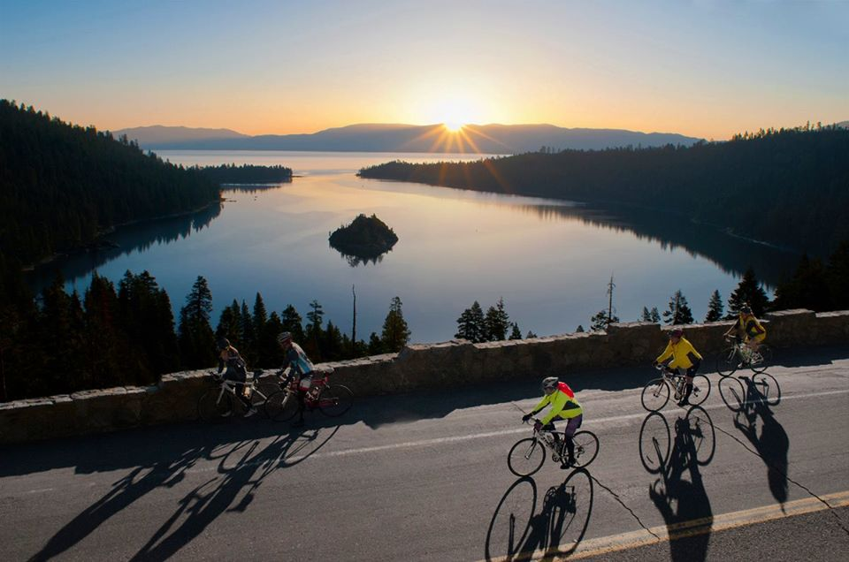

During the summers, I like to ride bikes in my neighborhood with friends. It is especially fun in the late evening when it is no longer hot and quite pleasant outside.

When the weather isn't great, I like to stay inside and find an interesting book to read. Audiobooks or online books are the best because they're much more accessible.

And, of course, I like to stay up late sometimes, playing video games with my friends. I play on PC and I prefer battle royale games.